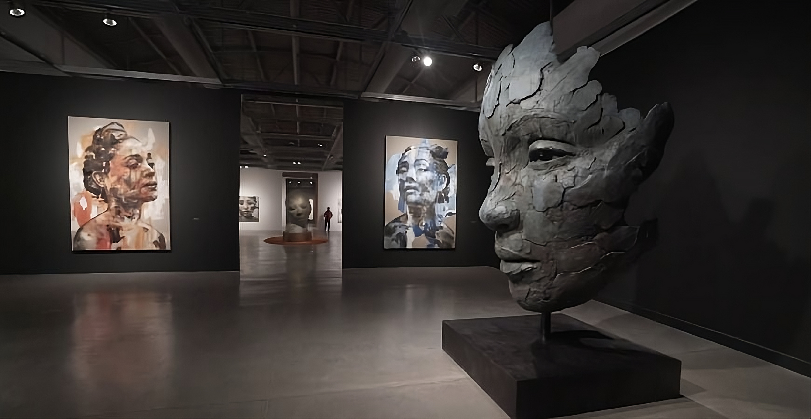
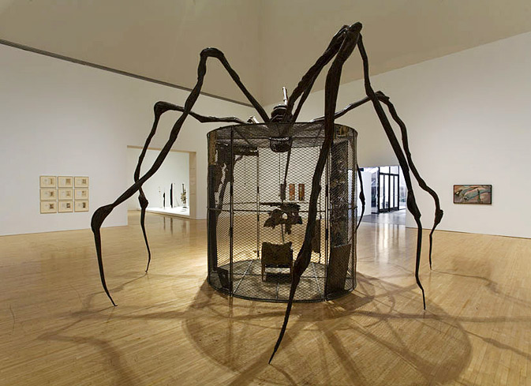
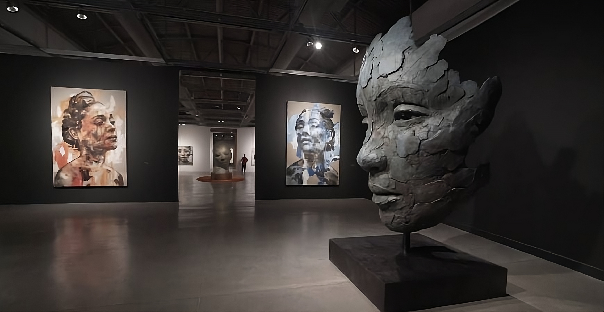
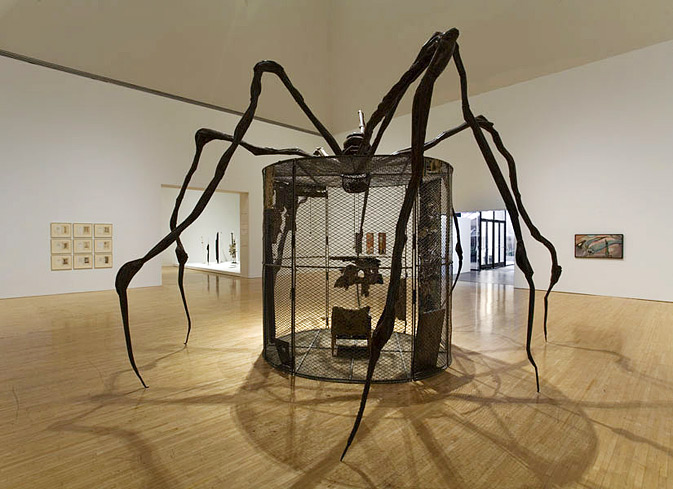
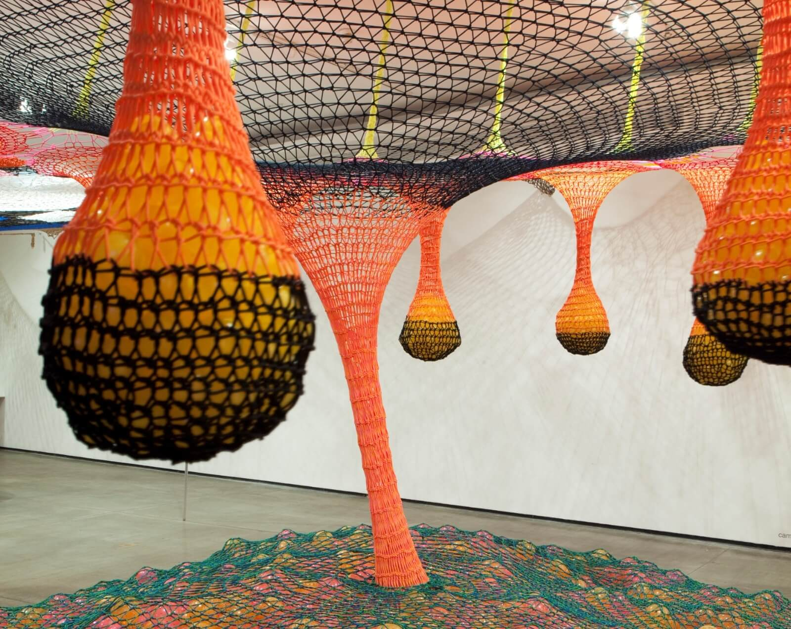
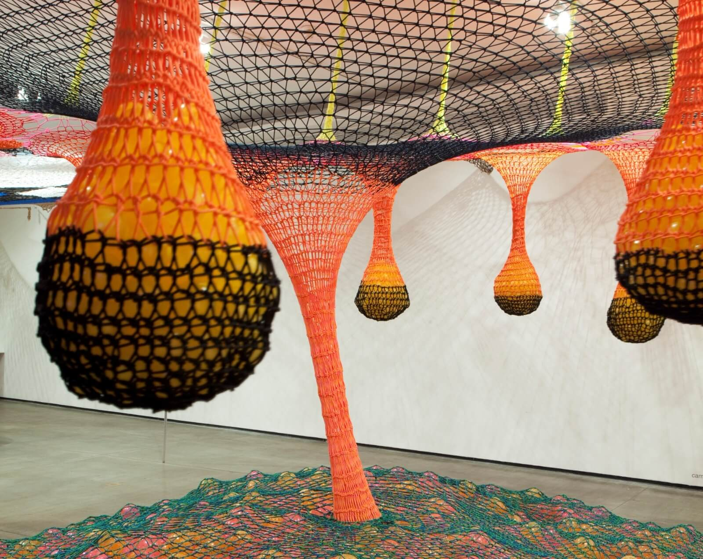
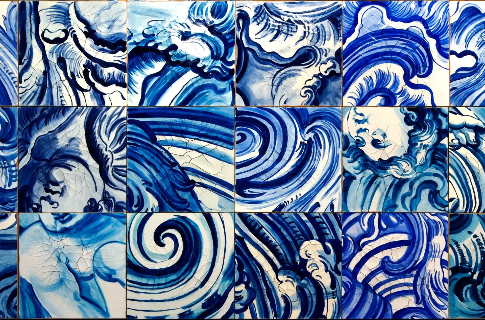
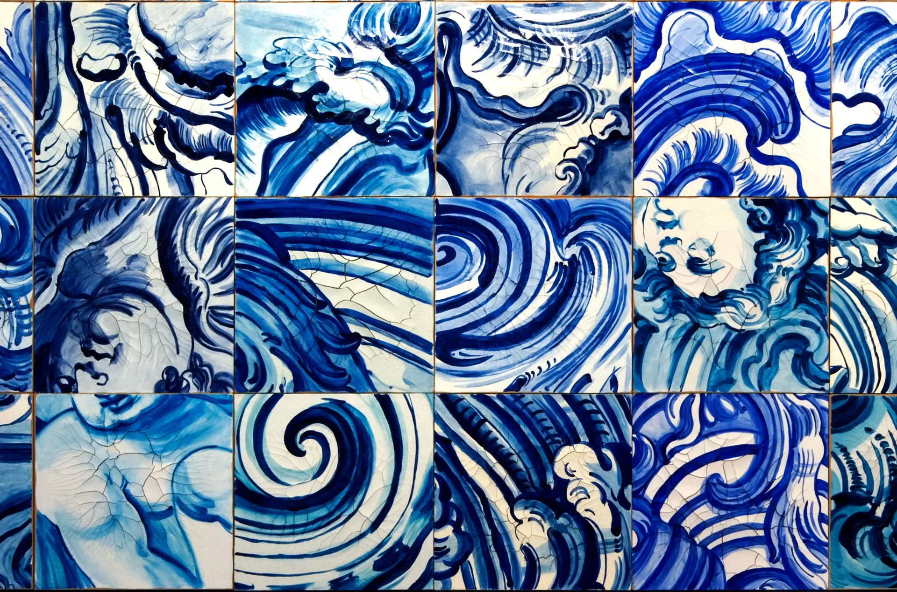

A Arte Contemporânea ou
Arte Pós-Moderna é uma tendência artística que surgiu na segunda metade do século XX.
Sua origem costuma ser relacionada à década de 60 e ao movimento pop art.
A Arte Contemporânea se prolonga até os dias atuais, período denominado de pós-modernismo,
propondo expressões artísticas originais com técnicas inovadoras.
Essa arte é marcada pela diversidade de estilos e mídias — pintura, escultura, fotografia, vídeo, performance e instalações.
Ela reflete a sociedade contemporânea, questionando valores tradicionais e explorando novas ideias sobre cultura, identidade e tecnologia.
Artistas contemporâneos misturam referências do passado com novas experimentações, usando conceitos como globalização, multiculturalismo e crítica social.
A Arte Contemporânea
 



 

 
